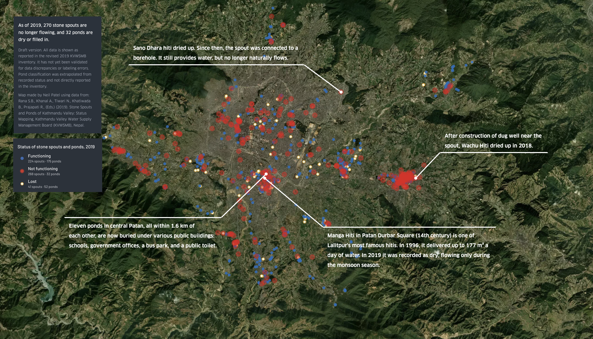

For 1,500 years, Kathmandu’s Newari community has gathered each June for Sithi Nakha, a festival that welcomes the monsoon. During the festival, communities pray at and clean ornate stone spouts called hitis. The spouts are part of the hiti pranali, ancient waterworks built by the Licchavi Kingdom in the sixth century to capture monsoon rain and release it through the dry season. Today, millions of people live amidst the ancient infrastructure, but many no longer know it is there. As the city grew, it drained, intersected, and paved over the upstream ponds and canals that feed the system, so many hitis no longer flow. Despite this neglect, 20% of households still rely on hitis for their water needs.
This storytelling project will unites a team of experts on the hiti pranali, including the Center for Integrated Development, Chiva Chaitya, and Baakhan Nyane Waa to recover the lost map of this system. We will combine community memory with historic satellite data and modern street-level imagery to map the original network and show where it has been damaged, built over, or put at risk by climate change. The result will be an interactive StoryMap that pairs these findings with narratives from people who still depend on and preserve the hitis through centuries-old rituals such as Sithi Nakha. It will help residents visualize the ancient waterworks beneath their feet and show city leaders why the system matters and how to protect it.
Draft Map of Spouts & Ponds (KVWSMB 2019)Link